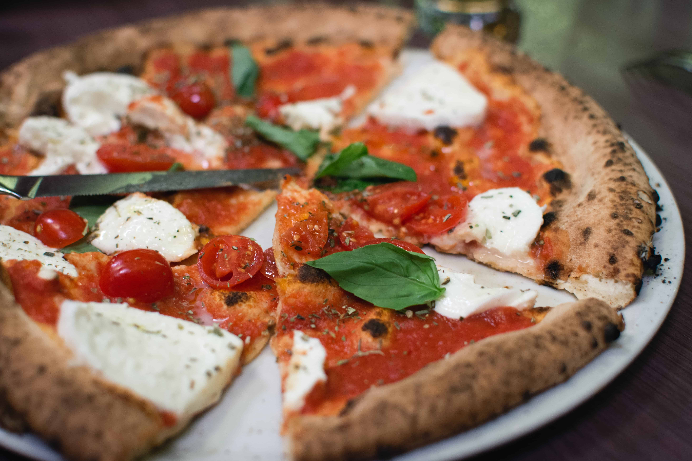

If you’re looking for a homemade pizza crust recipe that’s great for beginners, you’re in luck. This top-rated recipe is super easy to throw together on a whim – and it puts the store-bought stuff to shame. Learn how to make the best pizza crust of your life with just a few ingredients, find out how to shape the dough, and get our best storage secrets.
Now your Pizza Dough is ready to spread and add the ingredients